Atmospheric Chemistry and the Ozone Layer
Ozone (O3) is constantly produced and destroyed in the stratosphere, and its presence plays a vital role in shielding us from harmful UV radiation emitted by the sun. It is believed that life could not have flourished on land without this protective ozone layer, and instead, life would have been restricted to the depths of the ocean. The ability of ozone to protect us from harmful radiation is believed to result from the following mechanism:
| 1) | O3 | hν ⟶ | O2 + ⋅O | |
| 2) | O2 | + ⋅O | ⟶ | O3 + heat |
In the first step above, ozone absorbs UV light and splits into two pieces. In the second step, these two pieces recombine to release energy. There is no net chemical change, but there is one important consequence of this process: Harmful UV light is converted into another for of energy. This process exemplifies the role of entropyu in nature. LIght and heat are both forms of energy, but heat is a more disordered from of energy. The driving force for the conversion of light into heat is an increase in entropy. Ozone is simply the vehicle by which ordered energy (light) is converted into disordered energy (heat).
Measurements over the last several decades have indicated a rapid decrease of stratospheric ozone. This decrease has been most drastic over Antartica, where the ozone has dropped as low as 33% of its 1975. While many factors contribute to ozone depletion, it is believed that the main culprits are compounds called chlorofluorocarbons (CFCs). CFCs are compounds containing only carbon, chlorine, and fluorine. In the past they were heavily used for a wide variety of commercial applications, including as refrigerants, as propellants, in the production of foam insulation, as fire-fighting materials, and for many other useful applications.
They were sold under the trade name "Freons".
The harmful effects of CFCs on the ozone layer were elucidates in the early 1970s by Mario Molina, Frank Rowloand, and Paul Crutzen, who shared the 1995 Noberl Prize in Chemistry for their work. CFCs are stable compounds that do not undergo chemical change until they reach the stratosphere. In the stratosphere, they interact with high-energy UV light and undergo homolytic cleavage, forming chlorine radicals. These radicals are then believed to destroy ozone by the following mechanism:
The second propagation step regenerates a chlorine radical, which continues the chain reaction. In this way, each CFC molecule can destroy thousands of ozone molecules. A global treaty, called the Montreal Protocol, was agreed upon in the late 1980s and was followed by eight successive revisions to speed up the reduction of chlorofluorocarbon production. As a result, the concentration of CFCs in the atmosphere has been slowly decreasing since 1996, and the size and intensity of the "ozone hole" in Antartica has leveled off and is showing signs of recovery. This wll be a very slow process, as the chlorine radicals produced by CFCs have a very long life in the upper atmosphere. At the current rate of recovery, it is estimated that it will take five decades for the ozone levels in Antartica to return to their 1980 levels.
CFCs have largely been replaced with hydrofluoroalkanes (HFAs), also sometimes called hydrofluorocarbons (HFCs). Two examples are shown:
can sustain repeated cycles of evaporation/condensation.
FM-200
As illustrated by these examples, HFAs have C−F bonds and C−H bonds, but they lack C−Cl bonds. HFAs are less demaging to the ozone layer than CFCs, because C−F bonds are much less susceptible to cleavage by UV radiation than C−Cl bonds. The substitution of HFAs for CFCs was more complicated than one might think and required extensive research over the last three decades. Compressors in refrigerators and air conditioners had to be redesigned in order to use HFAs. Medical inhalers, based on HFA propellens, required extensive large-scale testing, as required by the FDA (Food and Drug Administration). Despite all of these efforts, HFAs still do not represent the perfect solution. For example, HFAs are powerful greenhouse gases that can contribute to global warming (a mole of HFAs is thousands of times more potent than a mole of CO2 in terms of greenhouse effects), and their use has been increasing by 15% per year. In addition, the cost of HFA inhalers is substatially more expensive than the old inhalers using CFCs. For these and many other reasong, efforts are underway to find commercially viable substitutes to replace HFAs in refrigerators, air condictioners, and inhalers.
Fire extinguishers
The combustion process is believed to involve free radicals. When subjected to excessive heat, the single bonds in organic compounds undergo homolytic bond cleavage to produce radicals, which then react with O2 in a coupling reaction. A series of radical chain reactions continue until most of the C−C and C−H bonds have been broken to produce CO2 and H2O. In order for this chain process to continue, a fire needs three essentials ingredients: fuel (such as wood), oxygen, and heat. In order to extinguish a fire, we must deprive the fire of at least one of these ingedients. Alternatively, we can find a way to stop the radical chain reaction by destroying the radical intermediates.
Many reagents can be used to extinguish a fire. Common examples found in many small fire extinguishers are CO2, water, and argon. A sudden discharge of CO2 or argon gas will deprive a fire of oxygen, while water deprives a fire of heat (by absorbing the heat in order to evaporate or boil); As the heat is removed from the combustion process, the fuel cools below its ignition temperature and the fire stops burning.
The most powerful reagents for extinguishing fires are called halons, because they are organic compounds containing halogen atoms. These compounds are generally either CFCs or BFCs (bromofluorocarbons). Here are just two examples of halons that have been extensively used as fire suppresion agents:
Halon 1211
(Freon 12B1)
Halon 1301
(Freon 13B1)
Halons are extremely effective, because they fight fire in three different ways:
Halons are gases, so a sudden discharge of a halon gas will deprive the fire of oxygen.
Halons absorb heat to undergo homolytic bond cleavage:
By absorbing heat, they deprive the fire of one of its essential ingredients.
Homolytic bond cleavage results in the formation of free radicals, which can then couple with the radicals participating in the chain reaction, thereby terminating the process:
Halons are therefore able to speed up the rate of termination steps so that they compete with propagation steps.
For all these reasons, halons are extremely effective as firefighting agents and were heavily used over the last three decades. Halons also have the added benefit of not leaving behind any residue after being used, rendering them particularly useful for fighting fires involving sensitive electronic equipment or documents.
Unfortunately, halons have been shown to contribute to ozone depletion, and thei production is now banned by the Montreal Protocol. The ban only applies to production, and it is still permitted to use existing stockpiles of halon gases. These stockpiles have been designated for use in special situations involving sensitive equipment, such as on planes or in control rooms. For all other situations, halon hases have been replaced with alternative gases that do not contribute to ozone depletion by are less effective as firefighting agents. One such example is called FM-200